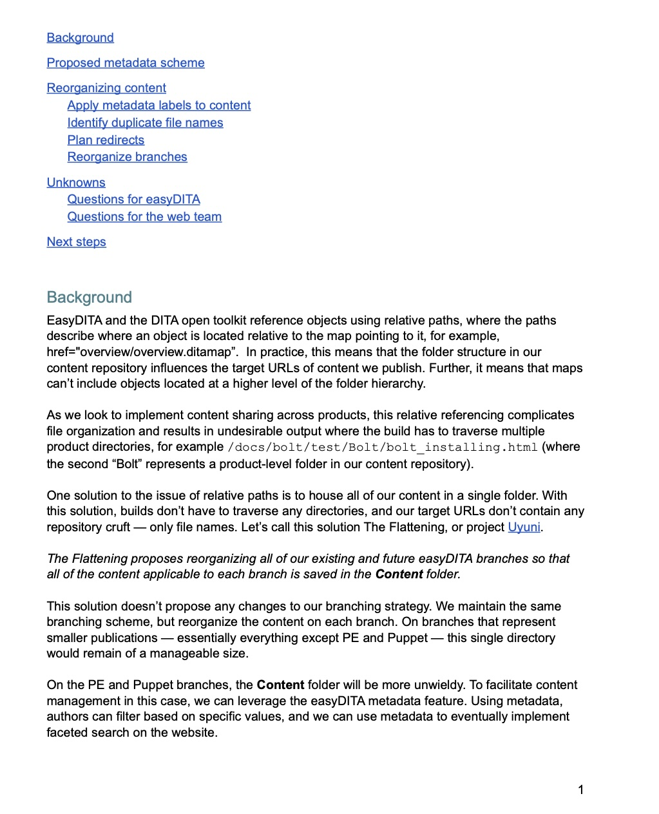
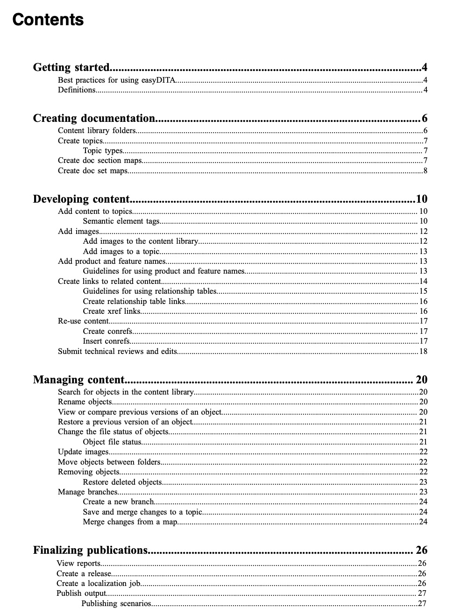

Information architecture & content strategy
Effective information architecture transforms unstructured content into scalable systems that support version control, content reuse, and automated publishing. I architect scalable documentation systems, solve content reuse challenges, and enable consistency through comprehensive standards that reduce technical debt and allow documentation to scale with product complexity.
Architecting scalable documentation systems (Puppet)
I led a comprehensive migration from unstructured Markdown to structured DITA authoring for the Puppet Enterprise documentation set. The project involved requirements gathering, vendor assessment, proof of concept, implementation and configuration decisions, team training, and production cutover. As part of the migration, I designed a repository structure that would reduce hierarchy, simplifying usage and enabling scalable content management. The architecture addressed version control, branching strategies, and content organization across multiple product lines and release cycles.

Repository architecture proposal demonstrating strategic IA thinking and technical depth.
📥 Download: DITA at Puppet presentation — Complete overview of DITA implementation strategy and repository architecture.
Enabling consistency through comprehensive authoring standards (Puppet)
After migrating to DITA, the documentation team needed comprehensive guidance on how to use the new system effectively. I established an authoring guide defining information types, metadata standards, content reuse patterns, relationship table strategies, and publishing workflows. The guide addressed content organization, file naming conventions, map structures, and quality standards—creating consistency across the documentation team and reducing onboarding time for new writers.

Comprehensive authoring guide establishing IA standards and workflows.
Solving content reuse challenges (Puppet)
As an open-core product, Puppet had two distinct documentation sets for open source and Enterprise, creating a disjointed user experience and duplication and version management challenges. The documentation was in two separate repositories and two different languages: DITA/XML and Markdown. After talking with multiple consultants who didn't have a solution, I pioneered a content sharing system using Git subtrees and DITA Light to share topics between product lines. Our "unified docs" solution eliminated duplicate content maintenance while preserving product-specific customization.
📥 Download: Unified docs technical overview — Technical implementation of cross-product content sharing system.
Business impact
- Enabled version control and branching for documentation across multiple product lines and release cycles.
- Built scalable content infrastructure supporting company growth and product complexity.
- Created consistency across documentation team through comprehensive authoring standards.
- Reduced onboarding time for new writers with systematic guidance and quality standards.
- Eliminated duplicate content maintenance between open source and Enterprise product lines.
- Solved previously unsolvable content sharing challenge across two repositories in different authoring languages.